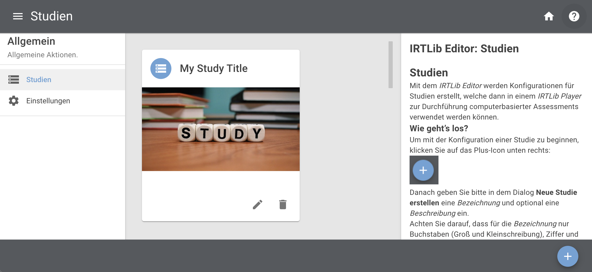

Vorbereitung: Übersicht / Preparation: Overview
Die Vorbereitung eines computerbasierten Assessments auf der Grundlage von CBA ItemBuilder-Inhalten beginnt mit der Verwendung des IRTlib-Editors zur Erstellung einer Studienkonfiguration. Dies umfasst in der Regel die folgenden Schritte:
- Voraussetzung: Überprüfen Sie die Verfügbarkeit der Runtime. Der IRTlib Editor kann zur Vorbereitung von Assessments mit im CBA ItemBuilder erstellten Inhalten verwendet werden. Für die Verwendung von CBA ItemBuilder Tasks, die in Projektdateien gespeichert sind, ist eine Runtime (d.h. die Dateien
main.*.jsundmain.*.css) in der Version erforderlich, die genau der Version des CBA ItemBuilders entspricht, der zur Erstellung der Items verwendet wurde (z.B.9.9.0). Bevor Sie den IRTLib-Editor verwenden, vergewissern Sie sich, dass die erforderliche Runtime enthalten ist, oder importieren Sie die Runtime-Dateien (siehe Abschnitt Einstellungen für Details).
Hinweis: Für die Verwendung von CBA ItemBuilder-Items ab Version 9.9 ist dieser Schritt in der Regel nicht notwendig.
- Erstellen einer neuen Studie: Der IRTlib-Editor wird verwendet, um sogenannte Studien zu konfigurieren. Die Version von Studien kann im Editor nachverfolgt werden, und Studien können veröffentlicht (d.h. für die Datenerfassung versiegelt) werden. Um mit dem IRTlib-Editor mit der Erstellung von Inhalten zu beginnen, muss zuerst eine Studie erstellt werden (siehe Abschnitt Studien für Details).
Beachten Sie, dass mindestens eine Studie im IRTlib Editor definiert sein muss, bevor eine Studienkonfiguration zur Datenerfassung mit einem IRTlib Player verwendet werden kann.
Basiskonfigurationen für Studie festlegen (Info): Zu den Basiskonfigurationen, die sich auf den Inhalt einer vorbereiteten Studie beziehen, gehören die Studienbezeichnung und -beschreibung, der Anmeldemodus, die Anzeigekonfiguration, das Menü für die Testadministratoren und die Angabe, wie nach Abschluss aller in einer Studie definierten Inhalte fortgefahren werden soll (siehe Abschnitt Studien für weitere Einzelheiten).
Erstellen eines neuen Erhebungsteils: Jede Studie besteht aus einem oder mehreren Erhebungsteilen. Erhebungsteile werden als Bausteine von Assessments betrachtet, die zusammen verwaltet werden, wie z.B. Items aus einer bestimmte Domäne. Erhebungsteile vom Typ CBA ItemBuilder können verwendet werden, um CBA ItemBuilder-Aufgaben in einer linearen Sequenz oder mit Blockly-basiertem Routing zu administrieren.
Beachten Sie, dass jede Studie mindestens einen im IRTlib Editor definierten Erhebungsteil benötigt, bevor eine Studienkonfiguration zur Datenerhebung mit einem IRTlib Player verwendet werden kann.
Grundeinstellungen für Erhebungsteil konfigurieren (Info): Ein Erhebungsteil vom Typ CBA ItemBuilder basiert auf einer Menge von CBA ItemBuilder-Tasks. Jede CBA ItemBuilder-Projektdatei benötigt mindestens einen Task, es werden aber auch Projekte mit mehreren Tasks unterstützt. Wenn CBA ItemBuilder-Inhalte mit einem gemeinsamen Zeitlimit über Tasks hinweg administriert werden sollen, erlauben Erhebungsteile die Zuordnung von Aufgaben zu einer Struktur, die Assessmentinhalte unterscheidet, welche vor einem zeitlich begrenzten Abschnitt administriert werden (z.B. Instruktionen, im Abschnitt Vorspann-Items), Inhalte die nach einem zeitlich begrenzten Abschnitt administriert werden (z.B. Danksagung, im Abschnitt Nachspann-Items) und dazwischen liegende Aufgaben mit begrenzter Zeit (Items, siehe Abschnitt Erhebungsteile).
Items Hinzufügen: Um die Definition eines Erhebungsteils abzuschließen, müssen die CBA ItemBuilder-Projektdateien in den Abschnitt Items importiert werden. Standardmäßig wird davon ausgegangen, dass die Reihenfolge der CBA ItemBuilder-Tasks linear ist. Wenn jedoch das Routing für einen Studienteil aktiviert ist, kann das Blockly-basierte Ablaufdefinition verwendet werden, um verschiedene Testdesigns zu implementieren (z. B. mehrere Hefte, mehrstufige Tests usw.).
Eingebettete Programhilfe
Für die Verwendung des IRTlib Editors ist eine Programmhilfe direkt in die Anwendung integriert, welche über das kleine ?-Symbol oben rechts eingeblendet werden kann.

Die Inhalte dieser Hilfe-Seiten aus dem IRTlib Editor sind in diese IRTlib Dokumentation integriert und werden immer in diesem Rahmen mit der überschrift Eingebettete Programmhilfe dargestellt.